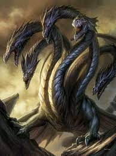

La Hidra era hija de Tifón (disforme de la Tierra y el Tártaro) y Equidna (una ninfa mitad humana, mitad serpiente) Vivía en un pantano cerca de Lerna, junto a Argos, en el Peloponeso. Fue criada por Hera bajo un plátano cerca de la fuente Amimone en Lerna. Bajo sus aguas había una entrada al Inframundo de Hades. Se decía que era hermana del León de Nemea, y que también por esa razón deseaba tomar venganza contra el héroe Hercules, pues éste había dado muerte a aquél en el primero de sus doce trabajos. A tal punto aborrecía la Hidra a Hercules que Euristeo la eligió como segunda labor expiatoria para el hijo de Zeus
La principal fuente para el conocimiento de esta leyenda es "la Biblioteca", un tratado de mitología escrito presumiblemente hacia el siglo I por un erudito griego de identidad desconocida pero al que convencionalmente se le llama Pseudo Apolodoro. Éste es el relato: “En vistas a su segundo trabajo, Hercules fue instruido para matar a la Hidra de Lerna. La bestia había sido criada en los pantanos de Lerna, desde donde se marcharía a las planicies para acometer rebaños y asolar la tierra. La Hidra era de enorme tamaño, con ocho cabezas mortales, y una novena en el centro que era inmortal. Con Yolao conduciendo, Hercules se dirigió en carro hacia Lerna, y allí, deteniendo los caballos, halló a la Hidra sobre una elevación contigua a las fuentes de Amimone, donde ella había anidado. Arrojándole lanzas ardientes, la forzó a salir, y cuando lo hizo fue capaz de atraparla. Pero ella se aferró a él envolviendo uno de sus pies, y él no pudo zafarse golpeándola con su maza, porque tan pronto como una cabeza era cercenada otras dos crecían en su lugar. Entonces un cangrejo gigante vino directo a socorrer a la Hidra, y mordió a Hercules en el pie. Por esta razón mató al cangrejo, y llamó en su auxilio a Yolao. Yolao hizo algunas antorchas prendiendo fuego una porción de los bosques aledaños, y, usándolas para quemar los muñones de las cabezas, impidió que éstas volvieran a crecer. Cuando hubo solucionado este problema, Hercules derribó la cabeza inmortal, la cual enterró y cubrió con una pesada roca al costado del camino que va de Lerna a Elaio. Despedazó el cuerpo de la Hidra y embebió sus flechas en su veneno”.